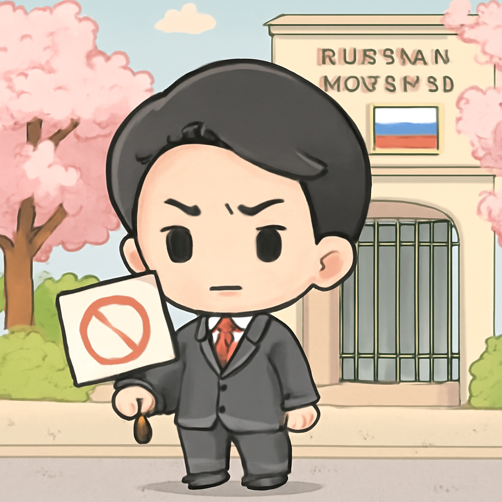

其一 · 烏克蘭基輔 · 明星網路遭限速影響戰局
烏克蘭面對星鏈網路速度限制影響作戰
在烏克蘭基輔，當地政府表示，雖然星鏈網路的接入有所改善，但速度依然受到限制，影響了戰場上的任務執行。這不只是科技問題，更是戰爭的生命線！如果網速再慢，可能連傳送求救信號都會卡住，真是讓人擔心。
🔗 原始新聞 ↗
2026-10-15 · 以古觀今，以笑抗愁
烏克蘭面對星鏈網路速度限制影響作戰
在烏克蘭基輔，當地政府表示，雖然星鏈網路的接入有所改善，但速度依然受到限制，影響了戰場上的任務執行。這不只是科技問題，更是戰爭的生命線！如果網速再慢，可能連傳送求救信號都會卡住，真是讓人擔心。
🔗 原始新聞 ↗
愛爾蘭公共部門工人進行大規模罷工
在愛爾蘭，數十萬名工人因薪資糾紛而發起罷工，這場運動顯示出公共部門對政府的不滿情緒。政府面臨的壓力越來越大，工人們希望能爭取到更好的待遇。看來，這個冬天不只是氣溫會下降，薪資的討論也會熱得不可開交！
🔗 原始新聞 ↗
日本政府對俄方拘留記者表示抗議

在東京，日本政府因俄羅斯拘留一名記者而召見俄方大使，該名記者被指控搜集軍事情報。這起事件不僅影響了兩國的外交關係，也引發了對言論自由的關注。希望這場外交風波不會成為火上加油的局面！
🔗 原始新聞 ↗
肯尼亞確認第二例埃博拉病例
肯尼亞最近確認了第二例埃博拉病例，該病例是首例患者的親屬。這讓人不禁擔心疫情的擴散，尤其是在上週已有一名患者因病去世。希望政府能迅速採取措施，控制疫情，否則，這可不是我們期待的家庭聚會！
🔗 原始新聞 ↗
墨西哥對社交媒體加強兒童保護
墨西哥政府最近簽署法令，禁止社交媒體上出現暴力內容，以保護未成年人。這一舉措是全球趨勢的一部分，旨在為孩子們創造一個更安全的網上環境。希望未來的網路世界能多一點陽光，少一點陰影！
🔗 原始新聞 ↗